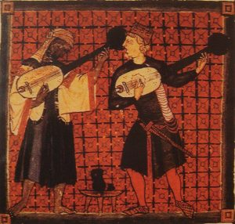

The title “religious scholar,” it must be remembered, is a very ambiguous categorization. It could either mean those who are engaged in academic work in the religious department of a university or it could also include those involved in subjective religious study, like in a seminary.
From a critical post-modern perspective, it could also include along with the academics, not only religious leaders (as scholars in terms of their acquired knowledge and their experiences) but also religious believers who profess and practice their religious beliefs in relevance to the needs of their situations.
However, in this essay I want to approach this category from an academic perspective. Though the term could also include theology, I cannot help noticing the fact that this category – religious scholar – is generally used to refer to religionists [1] in a “secular” public education system.
This indirectly implies that to be a “religious scholar” one must be objective by maintaining a safe distance from the theological space. In other words, scholarship is to be seen as an objective exercise, that can be done (only) by the “secular” person (who is an outsider to the religious space).
What does this mean for theology in general and comparative theology in particular? What does this mean for the communities whose religious beliefs are (claimed to be) objectively studied? It is with these questions that I begin this brief paper on religious scholarship.
The intention of this paper is to identify what religion and religious study is really about and the problems involved in the construction of the category of religion as we understand it today. Based on this, I intend to propose an alternative way of perceiving religious scholarship that is both un-hegemonic and relevant for important issues today.[2]
The Evolution of the Religious Scholar
Religion as we understand it today, contrary to our general assumption, is neither a sui generis category nor was it present forever in human history. Of course, there were different manifestations of religious beliefs throughout human history. But the question is whether religion was the same as we experience it today.
Thanks to the postcolonial scholars, it is apparent that religion is not a permanent essentialized category. Brent Nongbri has shown that religion certainly is a conglomeration of different historical events. He systematically argues that in the context of Protestantism, colonialism and enlightenment, religion had to be carefully separated by the Europeans from the public space to strategically maintain the stability of the global society in terms of their European superiority.[3]
In other words, the category of religion was nothing but a European imposition on the world. This historical fact was, in a way, soothed by the introduction of the discourse on religious pluralism in the end of the 19th century, which seemed to “recognize” and “respect” the religions of the world; in other words, religious pluralism was seen as a positive development.
However, Tomoko Masuzawa points out that the very concept of religious pluralism is problematic in its essence, because, as an off-shoot of colonialism, it “neither displaced nor disabled the logic of European hegemony…but…gave it a new lease.”[4] In that light, I believe it is necessary to highlight a few dynamics involved in the process of the creation of the category of religion and the discourse on religious pluralism, and thereby, its consequences for the academy.
Firstly, because colonization brought different peoples in proximity, the colonizers had to acquire knowledge about the natives, which also included information about their respective faiths and beliefs. But this knowledge, which was mostly developed in the 18th and 19th centuries, was from the perspective of the mostly (if not entirely) Christian Europeans and therefore was always measured against the scale of Christian-Europeanism.
This knowledge acquisition and construction was especially done by way of comparison, that later came to be called as comparative theology which would not “compromise the unique and exclusive authority of Christianity”[5] that was rooted in Europeanism. This “assumption of Euro-Christian supremacy over all others…. played a decisive role in the emergent sense of ‘the world’ as a totality,” which also included the newly invented category of religion(s).[6] Thus, the discourse on religions and religious pluralism, as we understand them today, is nothing but a “reification” of Euro-Christian supremacy.
Second, another offshoot from the colonial roots of religious pluralism was the creation of the category of “world religions,” that pushed other religions to the level of lesser or primitive religions. Masuzawa, in her study of the invention of the world religions discourse, shows that those religions with textual traditions (translated and interpreted by Orientalists) that were assumed to be ethically focused and those that were relatable to Christianity beyond their geographical boundaries had come to be classified as world religions; the non-textual and the locally-bound religions related to nature (studied by the anthropologists), however, became the primitive or lesser religions.[7]
Masuzawa notes that in the 19th century, “[I]n contrast to the great world religions, each with its own history, primitive religions lacked interest at this time because, supposedly, primitive religions had experienced little historical transformation.”[8] However, the “recognition” of some as world religions was no less hegemonic either, for it was in fact “just another name for Christianity and for Christianity alone” which “became available to men and women of faith as a new conceptual framework, which facilitated the adaption of Christian absolutism to the modern reality.” Thus, “world religion,” in this exclusivist sense, was not synonymous with but rather distinct from and diametrically opposed to the “religions of the world,” that is, other religions.[9]
Thus, as Masuzawa clarifies, the entire project of “world religions” was—and is—nothing less than a clandestine effort to maintain a Christian-centered European hegemony that also transmitted/s this hegemony upon other subaltern faith communities.[10]
Thirdly, as another consequence of colonialism (which also coincided with the Protestant idea of the separation of the church and the state), religion tended to separate itself from the public sphere to be(come) a “private” matter, thanks to the religious-political events of the post-reformation period.[11] Nongbri, asserts that in a context of colonialism and newly discovered differences, it seemed strategic that
[W]hen uniformity of religion is impossible to achieve, the best means for subjugating a people and maintaining a stable state is to allow distinct groups to live according to their own beliefs… [by emphasizing] …a highly personalized notion of religion that focused on the salvation of the individual soul. It is here that the theoretical differentiation of something called “religion” from the civic arena becomes quite clear.[12]
Further as Asad observes, the relegation of religion to the “irrational” private space was also a result of the ascent of secularism as the public space. He notes,
I would urge that religion is a modern concept, not because it is reified but because it has been linked to its Siamese twin “Secularism.” Religion has been part of the restructuration of practical times and spaces, a rearticulation of practical knowledges and powers, of subjective behaviours, sensibilities, needs, and expectations in modernity. But that applies equally to secularism, whose function has been to try to guide that rearticulation and to define “religions” in the plural as a species of (non-rational) belief.[13]
Thus, religions were restricted to the private space and identified by the understanding that they are soteriological vehicles for the individual person, separated from the “rational” secular world and therefore of no relevance to the socio-political life of the community.
As a product of the above-mentioned factors, the constructed identification of people based on religion became an essentialized state of being; that is, people began to consider religion as a defining aspect of their being, as that which gives them an “identity.”[14] This has led to the division of human communities based on their religion with clear-cut boundaries of separation.
Nevertheless, it should also be acknowledged that religion was appropriated by the colonized and other such categories as a “strategic essentialism”[15] to further their own interests, (such as independence.)[16] This indicates that, despite the hegemonic nature of religion as a constructed and essentialized category, it is still possible to draw relevant meanings out of it for the common good.
This view is also echoed by post-secular theorists like Jurgen Habermas and Charles Taylor who argue (albeit in their own ways) that the public sphere cannot ignore the value of religion for the functioning of the society.[17] Therefore, I believe that it is possible to say that religion and the study of religion can have a positive effect in the society and the academy, with certain re-formations—which is what I turn to next.
The Importance of (Comparative) Theology in Religion
Having discussed the dynamics behind creation of religion as a category, it is apparent that Christianity and Christian theology have played a very crucial role in this construction. With that in mind, the role of theology in religious studies can no longer be denied; on the other hand, scholars like J. Z. Smith have shown the continuing influence of theology on the study of religion.[18] Moreover, John Thatamanil, commenting on this article by Smith, argues that in order to do a genuine study of any religion it should be done from a theological stand point with a humble heart and an open mind.[19]
It is in this regard that I see comparative theology as an (if not the) appropriate field to do inter-religious study. Perhaps it would not be false to say that any honest inter-religious study would have to be a comparative theology project, rather than make objective (and therefore patronizing) claims.[20]
I base this argument on four important attributes of comparative theology. To mention them briefly: first, comparative theology is specific and focused on the traditions it engages with; second, it does not make any objective claims; third, it “listens” to the voice of the other traditions respectfully and humbly and; finally, it is responsible to the home community of the theologian.[21]
Summing up the above propositions, I would argue that, in an honest and humble engagement with other religions, the exercise proceeds and culminates as a comparative theology. However, there might be some issues to be resolved for comparative theology itself, before it begins to function as a post-colonially sensitive theology academic exercise.
De-Essentializing Comparative Theology
Thatamanil, a postcolonial scholar, proposes that comparative theology should effectively engage in an inter-religious encounter that goes beyond essentializing attitudes of religion. He writes, “A comparative theology that works against the reifying power of identity configurations, sanctified in the name of religion, is a powerful and desperately needed counterforce to those agonistic energies that are currently fracturing any hope for planetary loves.”[22]
Taking the cue from Thatamanil, I believe that a de-essentialized notion of religion would liberate the study of religious traditions from essentialisms, so that there would be no stratification of religions based on the old hegemonic norms. This would also imply that there would be no more hierarchical classifications as world and primitive religions under the pretext of religious pluralism. In that sense, comparative theology would become a “freed” and “sincere” academic task without reifying any imperialistic conceptions.
Secularizing Comparative Theology
However, even as we recognize the need to do a comparative theology that de-essentializes religion, it is also necessary, remembering the processes through which religion became essentialized, that we “move” religion from the private space to the public space. That is to say that we cannot hope to do proper comparative theology any longer with the assumption that religion is a private sacred matter.
Michael Barnes, building up on Clooney’s work on comparative theology, proposes that we do interreligious work not only based on texts, but on the practices of the faith communities, i.e. their daily lives.[23] Along the same note, Tom Driver reminds us that religion is more than creeds and doctrines and must be seen in “performativity”; in other words, religion cannot be confined to what is written and documented, but also in the ways it is enacted.[24] Thus, comparing theology will have to take seriously the “performative” aspect of religions in the public space.
Ethical Responsibilities
This aspect of inter-religious work (comparative theology) cannot be over-emphasized. Inter-religious work cannot claim to be involved only with the sacred attributes of religion. Since we have already proposed that the religious-secular divide should be breached, religion cannot restrict itself from its public responsibilities. As already shown, post-secular scholars have shown the value of religion for the well-being of the secular society.[25]
This becomes especially highlighted in situations where there is unjust structural oppression. Despite the complexities of religion, people have always made use of the available religious categories, strategically essentializing them, for their liberation and emancipation.[26]
Cornel West puts this appropriately when he says that
the culture of the wretched of the earth is deeply religious. To be in solidarity with them requires not only an acknowledgement of what they are up against but also an appreciation of how they cope with their situation. This appreciation does not require that one be religious; but if one is religious, one has wider access into their life-world.[27]
Therefore, comparative theology that engages with religious traditions and communities cannot neglect its role as a critical voice in the world.[28]
Ethical Responsibility: A Caveat
However, we should also bear in mind that not all ethical expressions are similar. While all religious traditions may agree on ethical values to a great extent, there might be different ways of expressing those values.
Moreover, there also might be different methods of attaining those values in a society. For instance, Sabah Mahmood, in her study of the Women’s Mosque Movement in Egypt, shows that contrary to common belief, the modes of resistance employed by these Muslim women were not only unique, but also contrary to the “accepted” western norms of resistance. It is necessary to acknowledge multiple modes of resistance.[29]
Therefore, a comparative theology that takes a postcolonial stand needs to recognize and acknowledge different and creative methods of attainment of ethical values in different religious communities. It is not appropriate to expect or impose one’s idea of method of resistance on to another community.
Conclusion: Summing up the Religious Scholar
As shown, the title “religious scholar” can no longer be restricted to the secular academy; in fact, there is no true possibility of using this term apart from a comparative theological perspective, if one wishes to disassociate herself from the colonial and imperialistic attributes of the modern category of religion.
But this comparative theology must also consciously work with a de-essentialized understanding of religion. Moreover, it must also be aware and respectful of the practices of faith in the lives of the believing community; comparative theology can no longer continue to entertain the sacred-secular modernist divisions.
Finally, comparative theology also needs to be committed to its ethical responsibilities for the communities whose faith traditions it seeks to engage with. However, having such responsibilities also means to recognize the plurality of expressions of resistances in order to attain those ethical values. Such a comparative theology would not only enable a sincere learning of religious traditions by religious scholars but also facilitate the envisioning and movement towards a just and egalitarian society.
Joshua Samuel completed his Ph.D. in Comparative Theology and Interreligious Engagement May 2017 at the Union Theological Seminary, New York.
[1] I use the word “religionist” as used by John Thatamanil. He uses it for the scholars who are involved in a secular study of religion. However, as he notices, the usage of the term is not without ambiguity. John J. Thatamanil, “Managing Multiple Religious and Scholarly Identities: An Argument for a Theological Study of Hinduism,” in Journal of the American Academy of Religion, December 2000, Vol. 68, No. 4, p. 791.
[2] Note: Because this paper is a reflection of the previously written weekly papers, several sources used in those papers are reproduced here.
[3] With colonialism, the society had evolved from Euro-centric to global. Interactions with new peoples necessitated the creation of categories in order to understand the lifestyle of the natives. Brent Nongbri, Before Religion: A History of a Modern Concept, (New Haven: Yale University Press, 2013), pp. 85 – 131.
[4] Tomoko Masuzawa, The Invention of World Religions: Or, How European Universalism Was Preserved in the Language of Pluralism, (Chicago and London: The University of Chicago Press, 2005), p. xiv.
[5] Ibid., 81. Emphasis mine.
[6] Ibid., 70.
[7] Ibid., 15, 108 – 114.
[8] Ibid., 42.
[9] Ibid., 119.
[10] It is also necessary to take note of Masuzawa’s work in its entirety that includes her investigation of the role of comparative philology and the academic departments in the construction of the world religions discourse. Chapters 3 – 7 in Tomoko Masuzawa, The Invention of World Religions…, pp. 107 – 256.
[11] Talal Asad, Genealogies of Religion: Discipline and Reasons of Power in Christianity and Islam, (Baltimore and London: The John Hopkins University Press, 1993), pp. 45 – 46.
[12] Brent Nongbri, Before Religion…, pp. 100 – 101.
[13] Talal Asad, “Reading a Modern Classic: W. C. Smith’s “Meaning and End of Religion,”” History of Religions, vol. 40 No. 3, (Feb. 2001), p. 221.
[14] David Macey, The Penguin Dictionary of Critical Theory, (London: Penguin Books, 2001), p. 115.
[15] “Strategic essentialism” is a term by Gayatri Spivak, who asserted that despite the problems surrounding essentialism, there are occasions in which the subalterns are forced to exercise strategic essentialism in order to counter the dominant oppressive structures. Bill Ashcroft, Gareth Griffiths & Helen Tiffin, Postcolonial Studies: The Key Concepts, Third Edition, (London & New York: Routledge, 2013), pp. 97 – 98.
[16] A good example would be the appropriation of Hinduism in India, in order to nurture and propagate the ideals of nationalism. See Richard King, Orientalism and Religion: Post-Colonial Theory, India and “The Mystic East.“ (London & New York: Routledge, 1999).
[17] In simple terms, while Habermas follows the Rawlsian ideal of insisting that though religion has a lot of worth for the society, it must be translated into a secular language to be of public use, whereas Taylor contends that the religious and the secular would have to challenge and learn from each other. Jurgen Habermas, ““THE POLITICAL” The Rational Meaning of a Questionable Inheritance of Political Theology” & Charles Taylor, “Why We Need a Radical Redefinition of Secularism,” in Eduado Mendieta & Jonathan Vanantwerpen (ed.), The Power of Religion in the Public Sphere, (New York: Columbia University Press, 2011), pp. 26 – 28 & pp. 51 – 56.
[18] For example, read the proposition made by Smith in Jonathan Z. Smith, “Tillich[‘s] Remains…”, in Journal of the American Academy of Religion, December 2010, Vol. 78, No. 4, pp. 1146 – 1157.
[19] John J. Thatamanil, “Comparing Professors Smith and Tillich: A response to Jonathan Z. Smith’s “Tillich(‘s) Remains,”” in Journal of the American Academy of Religion, December 2010, Vo. 78, No. 4, (Oxford University Press, 2010), pp. 1175 – 1178.
[20] Of course, it is necessary to differentiate the old comparative theology of the 19th century and the new version. On this, Clooney observes, “The older comparative theology seems, on the one hand, too comfortably immune to the complicated implications of what is learned, and, on the other hand, too diffident about how a faith bravely vulnerable to scholarship might truly profit from the deep study of another tradition.” Francis X. Clooney, Comparative Theology: Deep Learning Across Religious Borders, (Chichester: Wiley-Blackwell, 2010), p. 35.
[21] This is a basic and random summarization from Clooney’s work. Francis X. Clooney, Comparative Theology: Deep Learning Across Religious Borders, (Chichester: Wiley-Blackwell, 2010).
[22] John J. Thatamanil, “Comparative Theology after “Religion,” in Stephen D. Moore and Mayra Rivera, Planetary Loves: Spivak, Postcoloniality, and Theology, (New York: Fordham University Press, 2011), p. 257.
[23] Michael Barnes, Interreligious Learning: Dialogue, Spirituality and Christian Imagination, (Cambridge: Cambridge University Press, 2012), p. 21.
[24] Tom F. Driver, “Liminal Subliminal: Reflections on Ritual, Religion, and Theater”, (An essay shared with the New Haven Theological Discussion Group. March 15, 2013), pp. 7 – 8.
[25] See note 16.
[26] This is clearly evident in the African-based religions in Americas. The former slaves in the Americas “reinvented” their African religions in Christian language, both to retain their ancestral roots as well as to consolidate themselves against slavery. For example, see, Margarite Fernandez Olmos & Lizabeth Paravisini-Gebert, Creole Religions of the Caribbean: An Introduction from Vodou and Santeria to Obeah and Espiritismo, (New York and London: New York University Press, 2011).
[27] Quoted from “Introduction: The Power of Religion in the Public Sphere,” in Eduado Mendieta & Jonathan Vanantwerpen (ed.), The Power of Religion in the Public Sphere, (New York: Columbia University Press, 2011), pp. 10 – 11.
[28] Tracy Tiemeier argues that comparative theology must move beyond its comfortable and passive method of doing theology and become a critical voice of justice and liberation. Tracy Sayuki Tiemeier, “Comparative Theology as a Theology of Liberation,” in Francis X. Clooney, The New Comparative Theology: Interreligious Insights from the Next Generation, (New York: T & T Clark International, 2010), p. 149.
[29] See Sabah Mahmood, Politics of Piety: The Islamic Revival and the Feminist Subject, (Princeton & Oxford: Princeton University Press, 2005).